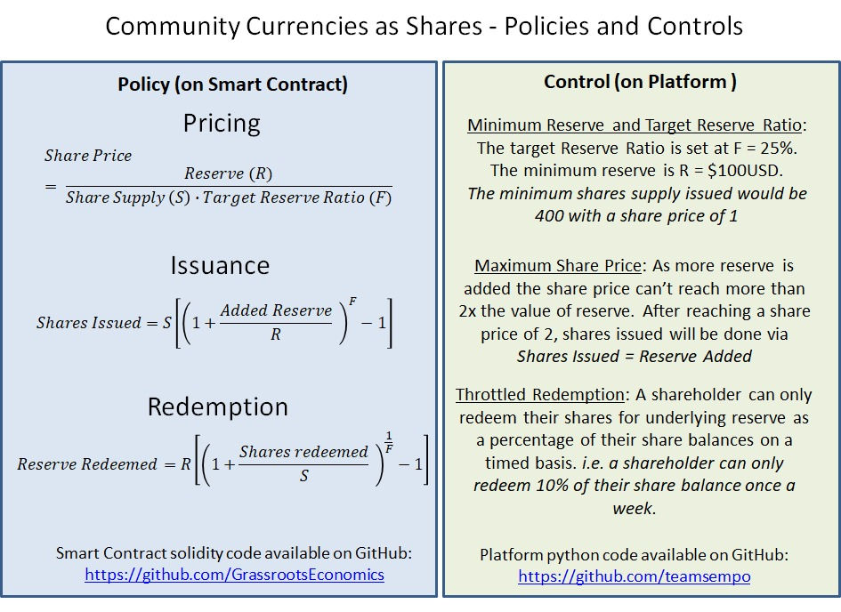

Enabling Leverage

From a Microfinance down to tabletop baking groups there is one thing that truly distinguishes these smaller and local financial service providers (FSPs) from a traditional bank and that is their inability to leverage their capital and issue credit. For the last 10 years Grassroots Economics has been working with micro businesses in marginalized communities to leverage their goods and services into a locally circulating credit (Sarafu-Credit or more generally called Community Currency). As we scale up these solutions to interact with larger and larger markets, we must provide guarantees for commercial businesses and other actors wanting to take part.
Banks are loosely bound to what we call a fractional reserve – I say loosely because the regulation required of them makes it very hard to audit that reserve. This loose regulation enables banks to over-issue credit and causes runs on those banks – several banks have collapsed in Kenya in the last few years due to this issue. Hence in re-imaging decentralized banking in the form Mohammed Yunnis was striving for, we need to do better than the existing financial industry standards.
At the heart of blockchain technology (I’m not talking about crypto-currencies here) there is the ability to encode policies into credits being created by FSPs. This means that for a tabletop bank, microfinance or traditional bank the risk of credit issuance can be regulated in real-time and insurance systems can be scaled down to the size of a 25 women savings and loaning group in the communities we work with.
Here is how we've begun to envision those policies:
- Pricing: FSP’s (including bank’s) credit should not be blindly assumed to be equal in value to national currency. The value of credit issued should maintain a 1:1 ratio when exchanged for national currency for only as long as the FSP maintains an adequate reserve of national currency. In other words, if an FSP is issuing credit there should be backing behind it – and the value of that credit should, in real-time, reflect the ratio of reserve to supply of credit. While banks today engage in monetary expansion at high risk to society - by adjusting the exchange price of credit we ensure that no more than the reserve can ever be claimed.
- Issuance: The amount of credit available (minted) should depend on the amount of reserve of an FSP. As more reserve is available more credit is available. As more and more reserve is added - less credit is minted - this causes the ratio of reserve to supply to increase and likewise the price of the credit supply to increase and encourages full reserves. Note that such a relationship between price and supply should not allow prices to drastically exceed national currencies, instead the additional value can be automatically moved into an insurance fund.
- Redemption: The credits described here are claims against a reserve but if those claims can be too rapidly liquidated then the value of those credits will be lost. When a FSP puts capital into a reserve it should be locked into a vesting instrument – meaning that those claims against it can only be redeemed slowly. This ensures there is time for insurances and market forces to fill back in the reserve as it is pulled out to maintain stability. Finally as credits are used to pull out reserve (rather than for local trade), the value of the remaining credit drops. This invites a market to cheaply add in reserve in order to mint more tokens and ensure stability of credit pricing.
- Reserve: While National Currency (on-chain in the form of stable tokens such as DAI and USDC) can be used as reserve now, there is a bright future in various reserve mechanisms residing on-chain, such as futures contracts and indexes into baskets of commodities as planned by groups like OpenLibra. Note that Community Currencies designed this way can be seen as shares of a collective reserve.
- Insurance: A sizable reserve can ensure that credit pricing is not too volatile there is still a need to insure FSP credit so that holders can know their risk of holding credit. As credit is issued and redeemed an insurance fund automatically stabilizes the price of those credits within acceptable limits.
For a video explainer of some of these policies please visit: https://youtu.be/8Z0chJBibhY and see the graphic below:
What does this all mean? While the above policies may sound complex, when imbued into the credits themselves (ala smart contracts), they enable something quite simple to happen. A tabletop banking group of 25 women in rural Kenya whom each save $1 a week and loan out those savings to their members now have the ability to leverage. Let’s say they put $100 into a reserve (which could be funded by donors) - at a target reserve ratio of 25% (based on a standard body as a requirement for humanitarian aid) they would create $400 of credit (with some reserve held in an insurance fund). This $400 of credit maintains its value of $400 as long as there is money going into reserve to match money leaving it. Group savings, and demand on the groups goods and services keep adding to the reserve while anyone holding that credit has a guarantee against the $100 reserve – meaning commercial businesses can accept the credit and pull out the National Currency they need to restock their supplies.
So far in 2019 using roughly $10,000 in reserve provided by DOEN.nl and minting $40,000 in credit we've seen $200,000 USD in 80,000 transactions for basic needs in undeserved Kenyan communities. We're excited to be piloting these concepts with the Red Cross and Sempo.ai in 2020 using Community Inclusion Currencies (see recent news). By exploring this space and enabling leverage we can open the door to truly decentralized financial services ( see white paper ). If credit can be safely issued by the people using that credit, we can truly change our world.
#leverage #fsp #banking #credit #microfinance #Yunnis #CIC #redcross #sempo